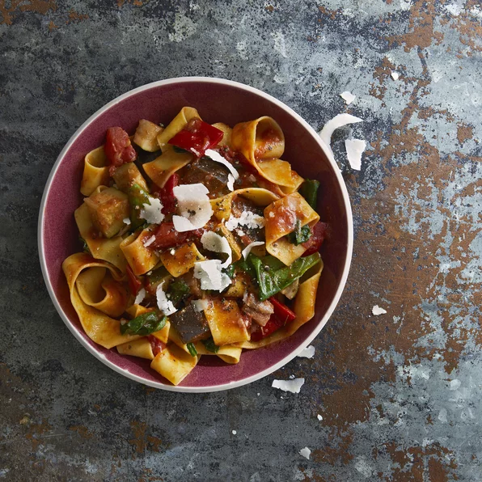

Pappardelle

Description
There are lots of different pappardelle recipes out there.
Why not try a new one this time?
Ingredients
- 1/4 cup extra-virgin olive oil
- 1 aubergine
- 1 pound tomatoes
- 1 clove garlic, minced
- 3 courgettes
- 1 package dried pappardelle
- 1 cup shredded mozzarella cheese
Steps
- Pour olive oil into a large pot over high heat. Add onion and garlic and saute for 2 minutes. Reduce heat and add tomatoes, eggplant, zucchini, bell pepper, tomato sauce, herbes de Provence, salt, and pepper. Stir in wine, cover, and simmer for 10 minutes. Uncover and simmer until vegetables are just tender, 12 to 15 minutes. Leave ratatouille warm in the pot until ready to use.
- Fill a large pot with lightly salted water and bring to a rolling boil. Cook pasta at a boil until tender yet firm to the bite, about 10 minutes. Drain, reserving 1/2 cup cooking water. Toss pasta with oil.
- Reheat ratatouille in an extra-large skillet over medium heat. Add pasta and spinach; toss just until spinach wilts. Add enough reserved pasta water to make a saucy consistency. Season with salt and pepper. Sprinkle with Parmigiano-Reggiano cheese and drizzle with balsamic vinegar.